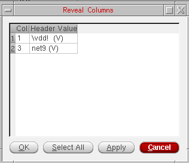

5
Working with Virtuoso Visualization and Analysis XL Table
Virtuoso Visualization and Analysis XL Table (Table) displays data for the selected traces or signals in a table for quick analysis.
This chapter includes the following topics:
- Opening Table
- Table Graphical User Interface (GUI)
- Saving Table Contents to a CSV File
- Selecting Columns
- Performing Undo and Redo
- Hiding and Displaying Columns
- Formatting Columns
- Sorting Table Columns
- Transposing Table Columns and Rows
- Changing Column Color
- Renaming Column Headers
- Merging Columns
- Filtering Table Data
- Displaying Complex Data
- Resizing Columns and Rows
- Printing Tables
Opening Table
You can open Table by using any of the following three methods:
- Opening Table from the Graph Window
- Opening Table from the Results Browser
- Opening Table from the Calculator
Opening Table from the Graph Window
To open Table from the graph window:
- Select the required traces in the trace legend area.
-
Right-click a trace and choose Send To – Table – New Window/Append/Replace.
The Virtuoso (R) Visualization & Analysis XL Table window opens, as shown in the figure above.- If you select the destination as New Window, the trace data is displayed in a new table that is displayed on a new tab.
- If you select the destination as Append, the trace data is appended to the table displayed on the active tab.
- If you select the destination as Replace, the Table on the active tab is replaced with a new table.
Notice that the tab name contains the names of all the traces for which data is displayed in Table. You can also close the tabs if required.
AC (contains frequency on the X-axis) and tran (contains time on the X-axis) analyses, in the same table. Parametric, Monte Carlo, and corner data, containing different X-axis values, is also displayed in Table by using the same method. Viewing Results for Sweep Data
The traces from parametric sweep data display trace data for each sweep value. The figure below displays the trace results for sweep data.
Opening Table from the Results Browser
To open Table from the Results Browser:
-
Select the signals for which you want to display the data in Table. To select more than one signal, hold down the
Ctrlkey while you click each signal. After you have selected the signals, do one of the following: -
From the drop-down list box on the Results Browser toolbar, as shown in the figure below, select the destination table where you want to display the signal data:
- Append—Adds the result to an existing table
- Replace—Replaces the existing table with the result
- New Window—Displays the result in a new table
-
New Subwindow—Displays the result in a new table
 button on the Results Browser toolbar.
button on the Results Browser toolbar.Opening Table from the Calculator
While using the Calculator, you can view in Table the data for the following:
- A signal contained in an expression in the Calculator Buffer
- An output signal obtained after evaluating an expression
To open Table from the Calculator:
- From the drop-down list box on the Selection toolbar, as shown in the figure below, select the destination table where you want to display the signal data:
-
To display signals contained in the Calculator Buffer:
The Virtuoso (R) Visualization & Analysis XL Table window appears.
For more information about Virtuoso Visualization and Analysis XL Calculator, see Chapter 4, Working with the Calculator in the Virtuoso Visualization and Analysis XL User Guide.
Table Graphical User Interface (GUI)
The Table graphical user interface (GUI) comprises a menu bar, a toolbar, and the tabs on which signal or trace data is displayed.
This section consists of the following topics:
Menu Bar
The following menus are available:
-
File—Includes the following commands:
Command Description Saves the table contents in the specified format. For more information, see Exporting Tables.
Opens the Print form that is used to print the contents of the Table window. For more information, see Printing Tables.
-
Edit—Includes the following commands:
-
View—Includes the following commands:
Command Description Hides the selected column. For more information, see Hiding and Displaying Columns.
Displays the selected column. For more information, see Hiding and Displaying Columns.
Sets the format attributes for the selected column. For more information, see Formatting Columns.
Sorts the selected column in the ascending or descending order. For more information, see Sorting Table Columns.
Transposes the Table rows and columns. For more information, see Transposing Table Columns and Rows.
Sets the default column order, in which the columns that contains X-axis data is displayed to the left of the columns containing the Y-axis data.
-
Tools—Includes the following commands:
Command Description -
Help—Includes the following commands:
Table Toolbar
The Table has the following toolbars:
File Toolbar
The following table describes the buttons available on the File toolbar:
| Button | Name | Description |
|
Saves the table contents in the CSV format For more information, see Saving Table Contents to a CSV File. |
||
Edit Toolbar
The following table describes the buttons available on the Edit toolbar:
| Button | Name | Description |
Tools Toolbar
The following table describes the buttons available on the Tools toolbar:
| Button | Name | Description |
|
Opens the Result Browser as an assistant in the graph window |
||


To hide or display the toolbars, right-click anywhere on the toolbar or status bar and select the toolbars you want to display.
To view signal names or expression for traces, right-click the Table toolbar or the status bar and choose Signals/Expressions. The Signal/Expressions window appears on the left, displaying the signal names or expressions for which data is displayed in Table.
To rename a Table window tab name, double-click in it and specify a name. Drag the tabs to change their display order. To change the display order of columns, drag the column headers.
Status Bar
The status bar shown at the bottom of the table displays the actions you perform in the Table.
Shortcut Menu
The following commands are available on the shortcut menu that appears when you right-click a column in Table:
| Command | Description |
|---|---|
|
Hides the selected column. For more information, see Hiding and Displaying Columns. |
|
|
Shows the hidden columns. For more information, see Hiding and Displaying Columns. |
|
|
Sets the format attributes for the selected column. For more information, see Formatting Columns. |
|
|
Sorts the selected column. For more information, see Sorting Table Columns. |
|
|
Transposes the Table columns and rows. For more information, see Transposing Table Columns and Rows. |
|
|
Sets the default column order, in which columns that contains X-axis data is displayed on the left of the columns containing the Y-axis data. |
|
|
Sets the background color of the selected column. For more information, see Changing Column Color. |
|
|
Sets the header name of the selected column. For more information, see Renaming Column Headers. |
|
|
Combines the selected columns that contain X-axis data. For more information, see Merging Columns. |
|
|
Combines all the columns that contain the X-axis data. For more information, see Merging Columns. |
|
|
Displays the values that fall in the specific range. For more information, see Filtering Table Data. |
|
|
Displays the value at a particular point in the column. For more information, see Filtering Table Data. |
|
|
Displays the rows X-axis values that match the specified set of sample values. For more information, see Filtering Table Data. |
|
|
Sets the width of all columns to ensure that the contents displayed in them are fully visible. For more information, see Resizing Columns and Rows. |
|
|
Restores the default column and row size. This option does not restores the default column order. For more information, see Resizing Columns and Rows. |
Saving Table Contents to a CSV File
Follow these steps to save the contents of a table to a CSV file:
-
On the File toolbar, click
.
The Save as CSV form appears.
- In the Look in field, browse to locate the directory where you want to save the CSV file.
- In the File name field, type a name for the CSV file.
- Click Save.
Exporting Tables
-
Choose File – Export.
The Export Waveforms form appears.
- In the Look in field, select the directory where you want to save the text file.
- In the File name field, specify a name for the file to which you want to save the table contents.
-
In the Files of type field, specify the type of the file.
-
CSV(Comma Separated Value) format allows the table contents to be imported to spreadsheet and other tools. -
VCSV(Visualization & Analysis File)format (default) allows you to save traces that can be loaded from within the Virtuoso Visualization and Analysis XL tool for use in the future. You can also add comments to the VCSV file after the standard header line. -
Matlabformat allows saved traces to be imported into Matlab. The Matlab format can be imported to Matlab by using the import wizard. -
SPECTRE(Spectre Input)format allows saved traces to be used as inputs to the Spectre PWL input voltage or current sources. -
PSF(Parameter Storage Format) format is available for use only in the Virtuoso Visualization and Analysis XL tool. The PSF format does not support digital data. -
SST2format.
-
For more details about other fields in this form, see Exporting Signals.
When you click Save, the table is saved as a text file in the string format. The below figures show the contents of VCSV and CSV files when you export theoutandin_psignals from table in the VCSV and CSV formats. Notice that the header part of this file includes the trace and axes names.
The header of VCSV file describes the data for the VCSV format. contains the version, signal names, X and Y axes names, type of data, and X and Y axis units.
The first line in the text file contains the column headers separated by commas. Each subsequent line contains a table row with the trace data values separated by commas.
Values displayed in table are saved to the text file. For example, if you hide a column and then save the table, the data in the hidden column is not saved in the text file. The Table tab name is not saved when you save a table in the CSV format.
Selecting Columns
You can select any column in the table by clicking on it. To select multiple columns, hold down the Control or Shift key and click the columns that you want to select.
To de-select a column, hold down the Ctrl key and click a selected column.
To select the entire Table, click the corner button available at the left-most corner of the Table header.
To de-select the Table selection, click the corner button available at the bottom of the scroll bar.
Performing Undo and Redo
You can undo and redo a specific number of actions performed in a selected Table.
To undo an action, do one of the following:
To redo an action, do one of the following:
Do the following to specify a limit for the number of actions that you want to undo and redo:
-
Choose Edit – Preferences.
The Preferences form appears.
- In the Limit Undo Actions list box, select the a limit upto which you want to undo and redo the actions. The maximum limit that you can specify is 10.
-
Click OK.
If you select 3 in this list box, you can undo upto the last 3 actions perfromed in the selected Table.
Hiding and Displaying Columns
To hide columns, do one of the following:
- Select the columns and choose View – Hide.
-
Right-click a column and choose Hide Column.
The selected columns are hidden.
To display columns that are hidden, do one of the following:
- Select any column and choose View – Reveal.
-
Right-click any column and choose Reveal Column.
The Reveal Columns form appears. This form displays a list of all the columns that are hidden in the Table.

Formatting Columns
To format a column, do one of the following:
- Select a column and choose View – Format.
-
Right-click a column and choose Format.
The Format Attributes form appears.
-
In the Active Format Location list, select the location as
CellorHeader. -
In the Scale Format list, select
Scientific,Engineering, orSuffix. -
In the Scale Factor field, specify the scaling factor, such as
10E-9. -
In the Significant Digits field, specify the number of significant digits to be displayed for the data. The maximum number of significant digits that you can specify is
16. - Click OK.
-
In the Active Format Location list, select the location as
Sorting Table Columns
When you sort a column the first time, it is sorted in an ascending order. The next time you sort the same column, it is displayed in the descending order.
To sort the columns in a Table window, do one of the following:
- Select a column and choose View – Sort.
-
Right-click the column you want to sort and choose Sort.
When the column is sorted, an arrow key appears at the column header. You can press this arrow key to change the sorting order of the column.
Transposing Table Columns and Rows
To transpose Table columns and rows, do one of the following:
- Choose View – Transpose.
-
Right-click anywhere in the Table and choose Transpose.
The table columns and rows are transposed, which means the column information is displayed in rows and vice versa.
Changing Column Color
To change the background color of a column:
-
Right-click a column and choose Change Column Color.
A drop-down list appears, from which you can choose the color that you want to apply to the background of the selected column.
Renaming Column Headers
Perform the following steps to rename the a column heading:
-
Right-click a column and choose Rename Header.
The Rename Header form appears. - Type the new name that you want to set as the column header.
- Click OK.
Merging Columns
Perform the following steps to merge two or more columns that contain the similar X-axis data:
- Select the columns that you want to merge.
-
Right-click the selected columns and choose Merge X. This option is available only when you select two or more columns that contain similar X-axis data.
The selected columns are merged into a single column in the Table window. The merged column includes of both sets of X-axis values. The corresponding columns that contain Y-axis data get either interpolated or extrapolated.
To merge all columns that contain similar X-axis data:
Filtering Table Data
To display in the table the data that matches a given set of sample values:
-
Right-click a column that contains X-axis data and choose Sample Values.
The Sample Values form appears.
Specify the following values and click OK:- Start—The starting value for samples
- End—The end value for samples
- Step—The step size
- Log—Select this check box to include the logarithmic values
All the X-axis values that match the specified set of sample values are displayed in the table.
To find the Y-axis value at a particular point:
-
Right-click a column that contains X-axis data and choose Value At.
The Value At form appears. Specify the X-axis value for which you want to find the Y-axis value.
To display all the rows and columns in a table that fall within the specific range of values:
-
Right-click a column that contains X-axis data and choose Apply Range.
The Apply Range form appears. Specify the start and end values for the range.
Displaying Complex Data
To change the format of the complex data:
- Right-click the table column and choose Display Complex As – Real/Imaginary/Real and Imaginary/Magnitude.
Resizing Columns and Rows
- Drag the right edge of a column header to the left or right to make the column narrower or wider respectively.
- Drag the top or the bottom edges of rows in the first column to make the entire row narrower or wider respectively.
To set the column width equivalent to the data displayed in the column:
To reset the column width and row height to their default values:
Printing Tables
Perform the following steps to print a selected table displayed in the Table window.
-
In the Table window, choose File - Print.
The Print form appears.
-
In the Printer group box, do the following:
- In the Name drop-down list box, specify the printer name.
-
To set properties for the print job, click the Properties button next to the Name field.
The Printer Properties form appears. This form has two tabs—Page and Job Options.
-
On the Page tab, specify the following fields:
- Select the units, such as Inches (in), or Millimeters (mm), in which you want the paper size to be displayed.
-
In the Paper group box, select the required page size in the Page size drop-down list box. The Width and Height fields display the default paper settings for that page size in the specified units.
- In the Orientation group box, select the print orientation as Portrait or Landscape.
- In the Margin group box, select the top, left, right, and bottom margins.
- In the Page Layout group box, select how many pages you want to print per sheet from the Pages per sheet drop-down list. You can also control the order in which pages are printed from the Page order drop-down list. By default, pages are printed from left to right and then from the top down.
-
On the Job Options tab, specify the following fields:
- In the Job Control group, from the Scheduled printing drop-down list, you can choose when do you want to schedule the printing job. You can also specify the billing information and the job priority in the respective fields.
- In the Banner Pages group box, from the Start and End drop-down lists, select the level of the information sensitivity that you want to print at the start and the end of the banner page, respectively.
-
Click OK to save the settings.
- Click the Options button to view the other printing options. When you click this button, two tabs are displayed in the Print form—Copies and Options.
-
Click Print.
Return to top